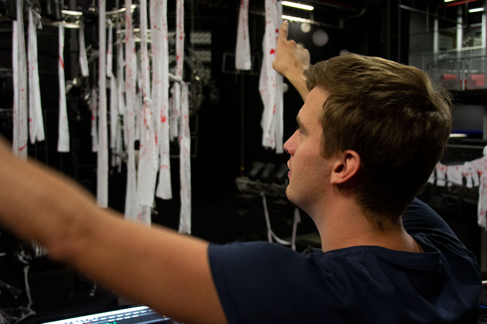

Wensen van de klant
Het vormgeven is niet meer zoals vroeger, volgens Raoul Boers (persoonlijke communicatie, 22 oktober 2019). Vroeger werd er iets op de tekentafel ontworpen en kwam dit product zo op de markt. Er was weinig keuze. Met de opkomst van het internet is het aanbod eindeloos. Als koper kun je blijven zoeken tot je hebt wat je wilt. Slecht ontworpen producten verdwijnen zo van de markt. Daarom is de rol van de ontwerper veranderd. Hij moet goed kunnen communiceren met de (mogelijke) gebruikers en onderzoeken wat deze precies willen. Of het nu om een stoel gaat of om een lichtshow. Ikzelf vind dit een goede ontwikkeling. Hierdoor krijg je een product dat optimaal aansluit op de wensen van de gebruiker. Het gaat dus niet alleen om je eigen visie, maar nog belangrijker: de wensen van de klant.
Muziek is emotie
Bij muziek gaat het om gevoel en emoties. Elke muziekstijl heeft zijn eigen publiek. Zo zijn er techno feesten, R&B festivals of concerten met klassieke muziek. Bij elk soort muziek hoort een andere (licht)show voor een andere beleving. Bezoekers willen een onvergetelijke avond uit. Het is makkelijk om thuis een cd op te zetten of te streamen via Spotify, maar de beleving, de energie of beter gezegd de aura van een live show, zal hierbij ontbreken.
Aura is a quality integral to an artwork that cannot be communicated through mechanical reproduction techniques – such as photographyWalter Benjamin
Je begeeft je dan namelijk niet tussen mensen met dezelfde emoties en de daarbij horende ambiance. Het gaat om de ultieme ervaring. Zeg nou zelf, een pizza eten in een pizzeria, spreekt toch meer aan dan een diepvriespizza thuis op de bank. Uit onderzoek van McLuhan (1967) blijkt dat het niet alleen om de boodschap gaat oftewel de pizza. Maar ook om het gebruikte medium, de pizzeria. Je loopt binnen en een vriendelijke Italiaan heet je welkom. Hij brengt je naar je plek en je krijgt een frisse Limocello. Het gedimde licht en de geuren versterken de beleving. In een pizzeria komt het gevoel veel sterker over. Als je de pizza thuis uit het karton haalt en in de oven schuift, is het simpelweg een pizza die je opeet.
Efteling
Michel Hensgens, zelfstandig lichttechnicus (persoonlijke communicatie, 26 oktober 2019), streeft in zijn werk naar het bieden van een totaalplaatje. Hij wilt iets extra’s bereiken. Zijn inspiratiebron is de Efteling. Hij zegt: “Als je de Efteling binnen loopt, zit je in een compleet andere wereld. Om dit te bereiken, is aan alles gedacht. Van de grote attracties tot de kleinste details. Dit maakt het juist zo magisch.” Dit zou volgens hem bij meer dingen moeten gebeuren. Van een beeldhouwwerk dat past in de omgeving tot de inrichting van een festival. Alles voor het ‘wow’ effect.

Voor Michel is het doel duidelijk. Als mensen het naar hun zin hebben, heeft hij het naar zijn zin. Hij wil zijn passie en enthousiasme overbrengen op de festivalgangers. Elk project groot of klein is voor hem een uitdaging. Elk met een andere aanpak. Het gaat volgens hem om het luisteren naar de klant. Van het schetsen en ontwerpen tot het uitvoeren.
Als ik kijk naar zijn werkwijze en de manier waarop zijn lichtshow tot stand komt, kan ik niet anders concluderen dan dat elke lichtshow als een op zichzelf staand product moet worden gezien. Hierbij hoort een designer, de lichttechnicus.
‘Wow’ effect
In mijn visie als ontwerper is oplossingsgericht te werk gaan essentieel. Dat begint met goed luisteren. Je maakt een product voor iemand anders. Je maakt het niet omdat jij het zo wilt hebben. Het moet de gebruiker tevreden stellen. Begin met een leeg canvas en een open houding. Inventariseer de wensen van de gebruiker en ga op basis daarvan aan de slag. Ik ben het met Michel Hensgens eens dat het om het totaalplaatje gaat. Het zijn de kleine dingen die het doen. Die zorgen voor het ‘wow’ effect. Ik ben van mening dat het huidige ontwerpen vooral om deze aspecten gaat. Of het nu gaat om het ontwerpen van een stoel of een lichtshow. Dus als je de volgende keer naar een concert gaat. Let dan eens op wat voor een impact de lichtshow op je heeft. Bedenk dat dit het werk van een designer is en geniet!
Bronnen
Benjamin, W. (1935). The Work of Art in the Age of Mechanical Reproduction. New York, Verenigde Staten: Schocken Books.
McKinsey&Company. (juni 2017). Customer experience: New capabilities, new audiences, new opportunities. Binnengehaald 31 oktober 2019 van https://www.mckinsey.com/~/media/McKinsey/Featured%20Insights/Customer%20Experience/CX%20Compendium%202017/Customer-experience-compendium-July-2017.ashx Pagina 14
McLuhan, M. (1967). The Medium is the Massage: An Inventory of Effects. United Kingdom: Penguin Books.